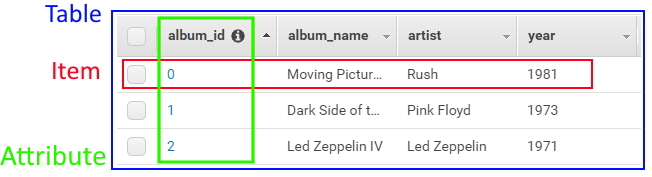

DynamoDB for Dummies

Table of Contents
Background
I’ve been dealing with DynamoDB lately, and it took me a while to wrap my head around it, so I thought I would make this guide for others.
Relational Databases
To understand DynamoDB, it might first be best to understand traditional relational databases (If you’re reading this, I assume you have some familiarity with SQL, so this will be quick). Relational databases such as MySQL, Oracle DB, and Microsoft SQL Server store highly-structured data in tables with rows and columns. These tables can relate to each other allowing for very powerful data access patterns.
For example, let’s say you have a database with a table for customers and orders.
Customers:
| Customer ID | Name | |
|---|---|---|
| 0 | Joe Smith | joe@example.com |
| 1 | Bob Jones | bob@example.com |
Orders:
| Order ID | Customer ID | Item | Amount |
|---|---|---|---|
| 0 | 1 | Chair | 24.99 |
| 1 | 0 | Table | 14.99 |
| 2 | 1 | Lamp | 44.99 |
Now, let’s say you want to figure out which items were purchased by Bob Jones over $30. This can be done with SQL like so:
SELECT orders.item FROM customers
INNER JOIN orders ON customers.id=orders.customer
WHERE customers.id == 1 AND orders.amount > 20;This would output:
| Items |
|---|
| Lamp |
As you can see, traditional SQL-based databases provide a lot of flexibility with how data can be accessed. However, this comes at a cost. These types of databases don’t scale horizontally, but rather vertically. This can become a challenge for high-throughput applications.
Most of the effort going into designing a database like this is figuring out how to most effectively represent the data in the database schema. How this data is queried and accessed is generally less important.
DynamoDB
DynamoDB is a proprietary NoSQL database offered by Amazon AWS that allows for near-infinite horizontal scalability. In contrast to relational databases, a lot of thought needs to be put into how the data is accessed rather than its representation.
Basics
Here are the basics parts of DynamoDB:
- Tables - A table holds items, much like relational databases. However, tables are entirely independent of one another and are not part of any “database”. Tables do not have a rigid column structure.
- Items - Items are what actually contain data with various attributes. This is like a table row. Items are uniquely identified by their primary key.
- Attributes - These are the data elements of items. These do not have to be consistent with other items in the same table. They are like table columns. An item in a “Albums” table would have attributes like “Year”, “Artist”, etc.

In terms of pricing, DynamoDB charges for both data storage, and read and write operations. Read and write operations use “read units” and “write units” which are pretty much just arbitrary units to quantify how much bandwidth/processing/etc. you used to perform an operation. You can either choose an on-demand pricing model, or a provisioned capacity model. More info is on the pricing page: https://aws.amazon.com/dynamodb/pricing/
Keys
In DynamoDB, there are two ways of accessing items by their primary key.
Partition Key Only
Items can have a unique partition key (also sometimes called “hash key”). No two items can have the same partition key. In order to query an item, one must know the partition key.
| Album ID (PK) | Album Name | Artist | Year |
|---|---|---|---|
| 0 | Moving Pictures | Rush | 1981 |
| 1 | Dark Side of the Moon | Pink Floyd | 1973 |
| 2 | Led Zeppelin IV | Led Zeppelin | 1971 |
In this example, the Album ID field is acting as the primary key.
Partition Key and Sort Key
Items can have a unique combination of the partition key and sort key (also sometimes called “range key”). This combination is called a “composite primary key”. No two items can have the same combination of the partition key and sort key. However, the partition key does not need to be unique. The sort key, must still be unique. In order to query a single item, one must know both the partition key and sort key.
| Artist (PK) | Album Name (SK) | Year |
|---|---|---|
| Rush | Moving Pictures | 1981 |
| Pink Floyd | Dark Side of the Moon | 1973 |
| Led Zeppelin | Led Zeppelin IV | 1971 |
In this example, the Artist field is acting as the partition key and the Album Name
as the sort key. This example would work, assuming no two artists release an album with
the same name.
Querying
In a partition key only scenario, only single items can be queried. This is because each item needs a single unique identifier, and that is the only query-able attribute.
On the other hand, composite key scenarios are exceptionally powerful, as sort keys can be queried with comparisons like equals, less than, and starts with. For example, lets say you have a table of different buildings.
| Type (PK) | Location (SK) | Name |
|---|---|---|
| office | US:NY:NYC | HQ |
| office | US:TX:DFW | Dallas Office |
| warehouse | US:CO:DNV | Denver Warehouse |
| warehouse | US:CO:BLD | Boulder Warehouse |
With a table structure like this, you could query for all warehouses in Colorado
with a query partition key of warehouse and a query sort key of startswith('US:CO').
You can see how this can be very powerful, especially if you use a timestamp as the
sort key. You could easily filter for certain time ranges.
Scanning
Sometimes, you just need to get all the data in a table. With DynamoDB, this is called scanning. This really should be avoided if at all possible as it will consume a LOT of read units. You can optionally filter the results by any attribute, but it will not reduce the number of read units used.
Indexes
Everything above really covers all the basics of DynamoDB. The core functionality is pretty straight-forward.
However, DynamoDB has more functionality. Another major feature is secondary indexes. Sometimes, you just need to look up values based on another attribute. Maybe it’s a username instead of the normal user ID. Secondary indexes let you query by attributes other than what you normally can.
Global Secondary Index
The first option is a Global Secondary Index. This is the most flexible option. It does not need to be defined at table creation and there is no limit on data size. It behaves just like an additional partition key. However, it uses additional read and write capacity units, so will cost you more. Additionally, a major caveat is that it is not read-consistent. What this means, is that if you write data to a global secondary index, and then immediately try to read that data, you may not receive that data back for a while. It will eventually propagate, but it is not guaranteed to be immediate.
Local Secondary Index
The other option is a Local Secondary Index. This is a lot more restrictive, but can make sense for the right use-case. It has to be defined at table creation (can’t update the schema later), each hash key can’t contain more than 10GB of data, and it shares the read and write capacity units of the underlying table. It also can only be used on tables with a partition key and sort key, as it behaves like an additional sort key. You still need to use the original partition key. It also optionally allows you enable read and write consistency if desired.
Conclusion
That’s about it! DynamoDB can be very inexpensive and flexible as a database. However, you really need to think through your database design and access patterns before you get started. It’s really best suited for large amounts of low-complexity data (such as logging events). Use the tool that suits your application best.